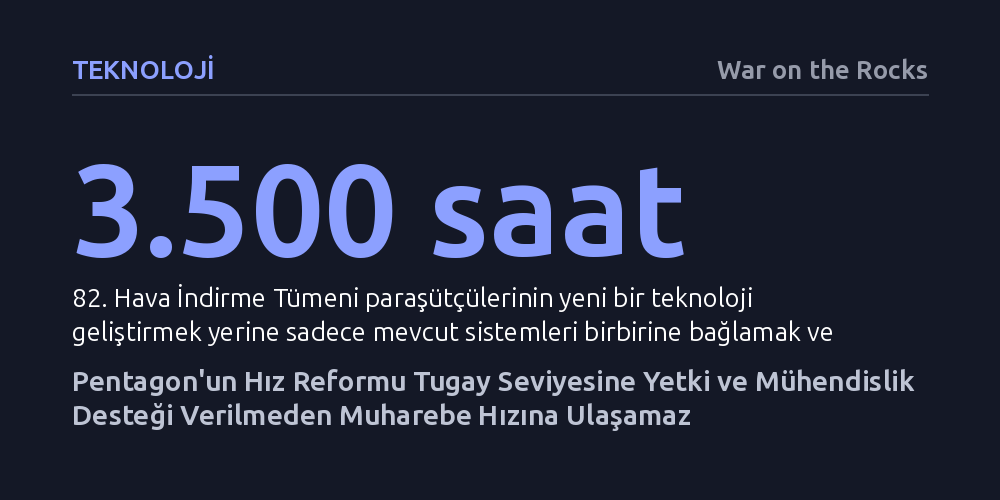

TEKNOLOJI · War on the Rocks · 2026-10-10
Pentagon'un saniyelerle yarışan modern angajman zinciri vizyonu, bürokratik onay süreçleri nedeniyle cephede haftalar süren gecikmelere takılıyor. Taktik tugaylara doğrudan bütçe ve entegrasyon yetkisi verilmedikçe, İHA ve yapay zekâ yatırımları muharebe hızına ulaşamıyor.
En ileri yapay zekâ ve İHA teknolojilerine sahip olmanın muharebede tek başına üstünlük sağlamadığını, asıl belirleyicinin teknolojiyi cephe hattına bağlayan bürokratik yetki ve entegrasyon mimarisi olduğunu ortaya koyuyor.

Pentagon'un son dönemde yayımladığı strateji belgeleri ve tedarik reformları; sensörler ile atıcı unsurları bulut ortamında birbirine bağlayan, yapay zekânın hedefleri anında teşhis edip uygun silahlara eşleştirdiği saniyeler mertebesinde bir dijital angajman süreci hedefliyor. Kağıt üzerindeki bu vizyonda İHA sürüleri ve algoritmalar karar döngüsünü inanılmaz bir hıza ulaştırırken, ölümcül kararların sorumluluğu yine insanda kalıyor. Ancak 82. Hava İndirme Tümeni 1. Tugay Muharebe Timi'nin Epic Fury Operasyonu sırasındaki saha tecrübesi, en ileri teknolojiye sahip birliklerde dahi bu idealin çok uzağında olunduğunu gösteriyor.
Pratikte yaşanan süreç dijital bir ağdan ziyade yorucu bir analog kuryeliğe benziyor. Görevdeki genç paraşütçüler, İHA'lardan gelen canlı video yayınını izleyip koordinatları defterlerine elle not ediyor ve bu verileri telsiz ya da telefonla kademe kademe farklı komuta merkezlerine sesli olarak aktarıyor. Araya giren her fiziksel merkez bilgi akışını yavaşlatıyor; ara kademeleri atlamak için kurulan kestirme kanallar ise sadece sesli telsiz trafiğini alıcı uçta yoğunlaştırıp ağı kilitlemekten başka bir işe yaramıyor. Sonuçta en nitelikli muharebe personeli, saniyelerin hayati olduğu bir ortamda manuel veri taşıyıcısı gibi çalışmak zorunda kalıyor.
Sahada kullanılan İHA sensörleri, IL5 seviyesindeki bulut sistemleri, Palantir Maven gibi gelişmiş hedefleme yazılımları ve topçu ateş idare mekanizmaları birbirinden tamamen bağımsız zamanlarda, farklı tedarikçiler tarafından ve ayrı standartlarla üretilmiş durumda. Bu unsurları birbiriyle konuşturabilmek için 1. Tugay bünyesinde yaklaşık 3.500 asker-saat mesai harcandı. Üstelik bu muazzam emek yeni bir yetenek icat etmek için değil, sadece eldeki sistemlerin birbiriyle uyumlu çalışmasını sağlayacak yamaları ve testleri yapabilmek için tüketildi.
Harcanan tüm bu mesaiye rağmen tam anlamıyla dijitalleşmiş bir veri akışı kurulamadı. İHA'lardan alınan hedefleme paketleri topçu ateş idare sistemlerine aktarılırken veri formatı uyuşmazlıkları ve ağ yapılandırma sorunları nedeniyle operatörler verileri yine elle düzeltmek ve manuel göndermek zorunda kaldı. Birliklerin emrinde doğrudan sahada çalışacak yazılım ve veri mühendisleri bulunmadığı için en küçük teknik tıkanıklık dahi gayriresmî kişisel temaslarla ve günlerce süren bekleyişlerle çözülmeye çalışıldı.
Ortadaki sorun ordunun teknoloji eksikliği değil, kurumsal karar alma mekanizmalarının hantallığıdır. Pentagon'un mevcut denetim kuralları aslında meşru kaygılara dayanıyor: Kamu kaynaklarını korumak, tek bir teknoloji şirketine bağımlı kalmamak, ağları siber saldırılardan korumak ve hedefleme hatalarını önlemek hayati önem taşıyor. Ancak bu güvenlik ağlarının gerektirdiği onay süreçleri haftalarca hatta aylarca sürdüğünde, sahadaki askerin ihtiyaç duyduğu uyarlamalar yapılamıyor ve bürokratik güvence arayışı doğrudan cephedeki birliği tehlikeye atan ölümcül bir operasyonel riske dönüşüyor.
Yazının işaret ettiği temel kırılma noktası tam olarak burada yatıyor: "Saniyelerle ölçülen bir angajman zinciri, haftalar veya aylarla ölçülen süreçlere bağımlı kılınamaz." Washington'daki karar vericiler küçük bir veri yönlendirme iznini veya basit bir yazılım bağlama onayını bakanlık düzeyindeki kurullarda haftalarca müzakere ederken, sıcak çatışma bölgesindeki bir tugayın bu gecikmeyi telafi edebilecek hiçbir esnekliği bulunmuyor.
Taktik birliklerin muharebe hızında hareket edebilmesi için dört yapısal adımın hayata geçirilmesi gerekiyor. İlk olarak, tugay komutanlarına piyasadan hazır ticari donanım ve yazılım alımları için 50 bin dolara, acil teknik hizmet sözleşmeleri için ise 100 bin dolara kadar doğrudan harcama yetkisi devredilmeli. İkinci olarak, farklı yazılımların ve veri hatlarının birbirine bağlanmasını sağlayacak taktik işletim onayları tümen komutanı seviyesine indirilmeli; böylece aylar süren siber güvenlik ve uyumluluk bürokrasisi, riskler yerinde tartılarak günler içinde karara bağlanabilir.
Üçüncü adım, tugayların emrine doğrudan sahada görev yapacak mühendislik ekiplerinin tahsis edilmesidir. Askerlerin kendi görevlerini bırakıp veri köprüleri kurmakla uğraşması yerine, sözleşmeli veya üniformalı yazılımcılar sistem entegrasyonunu kesintisiz yürütmelidir. Son olarak, tugaylar yapay zekâ geliştirme programlarına doğrudan ortak edilmeli; sahada üretilen gerçek operasyonel veriler algoritmaların anında eğitilmesinde kullanılmalıdır. Pentagon reformlarının başarısı strateji metinlerinin parlaklığıyla değil, bir tugayın muharebe sahasında ne kadar hızlı uyum sağlayabildiğiyle ölçülecektir.